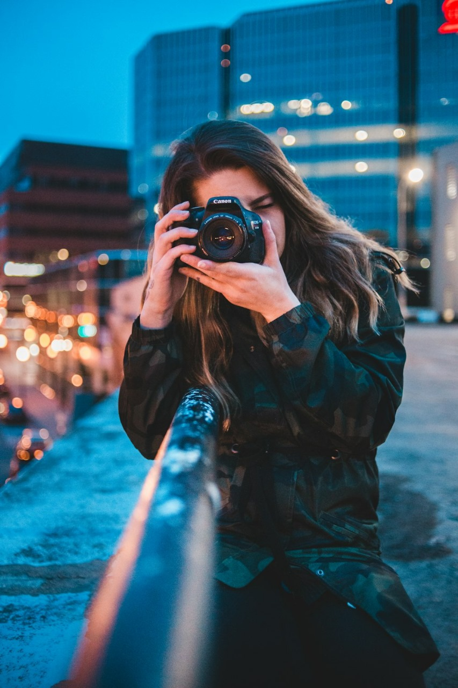

PHOTOGRAPHER
What is a Photographer?
A photographer is an artist who captures and creates images using a camera. Photography is both a science and an art, requiring technical skill and artistic vision
Types of Photographer
1. Portraiture Photographer
There are almost 8 billion people in the world. And with different cultures, races, and ages, people are probably one of the most fascinating subjects for photography.
Portraiture or portrait photography is one of the oldest and most common types of photography. As a portrait photographer, your aim is to capture the personality and emotions of your subject, using lighting direction and backgrounds. You may want to have a more specialized genre so you can be easily identifiable to clients looking for that particular style.
• Headshot Photographer
Headshot photographers focus on the human face and how their personality will be communicated with few to almost no props or backgrounds.
• Boudoir Photographer
Boudoir photography involves women wearing lingerie or sexy outfits. It gives an intimate and sensual feel, so you should emphasize the curves and shape of your subject’s body.
• Glamor Photographer
As a glamor photographer, your aim is to highlight your subject’s beauty and charm. This time, your subject may appear alluring and sexy even with full clothes.
• Baby and Child Photographer
Many parents want to capture each and every milestone of their children. So they hire photographers to take photos of their babies or young kids.
• Family Photographer
A Family portrait is very important to your client. These usually are framed and shown to every visitor in the house. So you should know how to bring out their best smiles.
2. Events Photographer
People will always want to remember the most special occasions in their lives. As an events photographer, you must capture these milestones and events in their lives. A good events photographer must have an eye for the most unique and special moments during an event.
• Wedding Photographer
Every couple wants a good wedding photographer. As a wedding photographer, your photos should show how special and romantic the event is.
• Concert Photographer
Probably one of the most challenging events to cover is a concert. The audience area is dark, the stage is full of bright lights, and there is movement everywhere.
• Sports Photographer
As a sports photographer, first and foremost, you must understand the sport itself. The actions are quick, and you should anticipate what will happen
3. Nature Photographer
Nothing can compare to the adrenaline rush of capturing wildlife, right? Being able to take a clear and perfect photo of a jumping whale or a dog catching a frisbee is pretty mind-blowing.
• Wildlife Photographer
Capturing wildlife in their natural habitat takes a lot of patience and skill. Well, it also needs expensive equipment. You see how those National Geographic photographers do it, right? You will patiently wait, camouflaged in your corner, with just seconds to take that shot.
• Pet Photographer
Pets are considered family. So pet owners expect the photo of their pets to be as good as a human portrait. If you love taking pictures of animals, then this could be for you.
• Landscape Photographer
Your goal as a landscape photographer is to have jaw-dropping photos. Whether you use a digital camera or a drone, you should show the beauty of your subject in its grandest form. In landscape photography, you feature nature at its finest, the sun setting, the great mountains, or waves hitting the rocks.
• Underwater Photographer
Underwater photography may be for you if you are in for an adventure and love the ocean. You just need to have the right camera and equipment to capture amazing underwater photos. Oh, and of course, you must be a good swimmer.
• Astro Photographer
Capturing astronomical events and objects is impressive. However, this is a highly technical type of photography. Your camera specifications and settings should be perfect in order to create that marvelous photo of the night sky.
3. Cityscapes and Structures Photographer
• Architecture Photographer
Highlighting architectural wonders takes skill and a good eye for detail. The angles should be right, and the perspectives should leave your audience in awe.
• Cityscape Photographer
City folks are always busy. They do not have time to stop and appreciate their surrounding. A cityscape photographer captures the image of the city in full view, like how the city looks at night with its bright lights or an aerial shot showing the rooftops of buildings.
4. Commercial/Advertising Photographer
Being a commercial photographer is a very profitable profession. A commercial photographer is always in demand. The downside is, you have a lot of competition. So, make sure you have the right resources for freelance photographers to help you.
• Product Photographer
A product photographer ensures that the product is greatly emphasized. A product photographer should be skilled in plotting layouts for the items needed to be highlighted. Product photography may include food or automotive products, so you must also know how to take great photos of these. Your photo itself should sell the product!
• Fashion Photographer
Clothes, shoes, bags. As a fashion photographer, you should know how to pose your model to highlight these items.
5. Lifestyle & Reportage Photographer
Lifestyle and reportage photographers capture real-life events that highlight everyday situations on the streets or anywhere else.
• Documentary Photographer
Documentary photographers narrate the events through their photos. It may be for travel, history, or anything that basically serves to record a phenomenon or situation like wars or pandemics.
• Photojournalist
A photojournalist tells the news through photos. It captures what is happening now and is usually published in newspapers and magazines.
How to become a Photographer?
Professional Photography is one of the very few fields where structured training is not a prerequisite. You can self-learn, practice, and improve your skills without going to a formal educational institute. However, it can add a lot of value to your career, skills, and experience as a professional photographer.
A wide range of photography courses from Photography Certificate programs to Masters level courses is available.
The Certificate Photography programs can be completed in a few months. They help students learn essential skills and knowledge in photography. These programs cover the basics of:
• Fundamentals of photography.
• Principles of Digital photography, how to use Photography software, and image manipulation techniques.
• History of photography and foundation of film photography
The Associate Degree in Photography is offered in various Art Schools, Colleges, and Universities. The Associate Degree course typically lasts for two years. The curriculum is technical and prepares students to learn the different types of photography and use various techniques – from transparency and negative films to working in a natural setting. Students also learn to acquire skills for making photographs in a studio.
The Bachelor of Fine Arts in Photography is typically a four-year course available at a University or College. The course includes in-depth curricula and supporting coursework. It entails a study of the fundamentals of photography, digital and film photography, its narratives, history, and techniques. The course also teaches understanding imagery in Editorial, Advertising, and Fine art photography. And, this guide will walk you through some of the fruit-producing tips and tricks editorial photography.
The Master's Degree in Photography or Master of Fine Arts prepares students to explore theory and gain essential practical experience. The Master's Course is available for students who have completed the Bachelor's Program.
Online Photography Courses
If you are currently employed full-time, you can choose from a range of Online Photography Courses that will give you a good understanding of the basics. While the really good ones are paid, there are several free online photography courses also available. You can take up these courses in your free time and improve your skills. You can also join photography workshops during weekends to build your portfolio, which would become a base in your journey as a professional photographer.